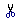

Название
Буфер обмена — Вырезать, копировать, вставить
Вырезать, копировать
Вырезать или копировать текст в буфер обмена редактор позволяет тремя способами.
Нажать соответствующую кнопку на панели инструментов,  - вырезать, - копировать.
Щелкнуть правой кнопкой мыши на выделенном фрагменте текста и выбрать соответствующий пункт меню.
С помощью комбинации клавиш. CTRL+X - вырезать, CTRL+C - копировать.
Вставка
В редакторе есть три способа вставки текста.
1. Обычная вставка. Осуществляется комбинацией клавиш CTRL+V или кнопкой  на панели инструментов. Если настройки вашего браузера не позволяют вставлять данные непосредственно из буфера обмена, то появится специальное окно, в которое можно будет вставить тескт.
на панели инструментов. Если настройки вашего браузера не позволяют вставлять данные непосредственно из буфера обмена, то появится специальное окно, в которое можно будет вставить тескт.
2. Вставить только текст -  . Убирает все формаирование из текста.
. Убирает все формаирование из текста.
3. Вставить из Word -  . Этот вариант вставляет текст, ранее написанный в MS Word. При этом можно игнорировать шрифтовые определения и стили.
. Этот вариант вставляет текст, ранее написанный в MS Word. При этом можно игнорировать шрифтовые определения и стили.